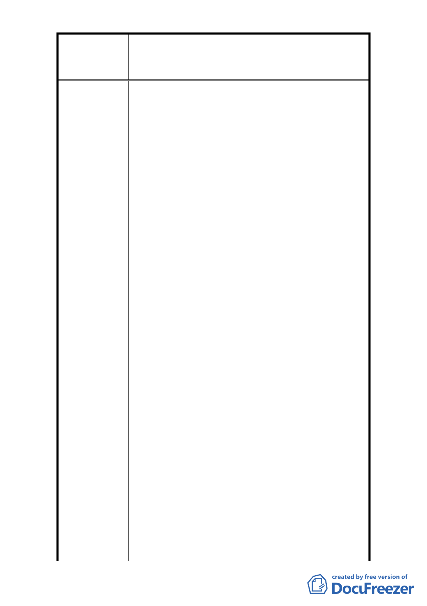

修訂臺北市大安區青田街保存區聚落風貌保存專用區細部計
案
名
畫、變更部分第三種住宅區、第三種商業區(特)為第三種住宅區
(特)(日式宿舍)及第三種商業區(特)(日式宿舍)暨劃定週邊地
區都市設計管制細部計畫案
1. 96 年 7 月 30 日起因保護日式宿舍，大安區龍安里
(住三)被剝奪了應有的權益，無法與台北市所有
(住三)擁有相等的權益。難道只有等日式房舍凋
零，才能回復本里(住三)應有權益。龍安里民是何
等不幸，中華民國不應有如此惡法(陪葬條款)。臺
北市所有(住三)權益均應相等，人民(財產權)應受
中華民國憲法保障。
2. 近年來之宿舍老舊白蟻蛀壞如為民生國計急需改
建。
3. (1)「古蹟」、「歷史建築」及「日式宿舍」係分別
「散落」在青田街街廓而非聚集在一塊而自然形成
「聚落」的形態，故計畫使用之名稱即已具爭議
性。(2)試問「日式宿舍」欲保存保護之法源依據
為何？萬不可僅憑一紙行政命令而行事。(3)「日
式宿舍」屬數十年至近百年建築（多已老舊瀕臨坍
塌的地步，維護費用與事項繁雜）而社區內也有數
十年至半世紀甚至超過半世紀的 4,5 層樓公寓，其
是否亦具有保存保護之價值(亦即其保存保護之標
陳 情 理 由 準為何？是否應先行定義清楚？否則恐若人口實
或圖增罵名而已)，另 4,5 層樓公寓之拆建已為郝
市長獎勵都更的重要政見之一，而現階段身為在地
的台灣人卻為了保存保護日本殖民期間所遺留下
的「宿命」而爭論，試問此是否是身為台灣人可憐
復可悲之處？還是宿命？(4)舉世歷來文化資產絕
大多數均屬「公共財」少數為「私有財」，試問是
否有何法源依據可強制約束房產所有人（暫不論公
私法人或私有）有其義務來維護甚或保存保護「日
式宿舍」(其並不屬於文化或建築資產)？若無法強
制有效約束房產所有人試問所為何來？其維護或
保存保護費用又該由誰來支付？要知其維護費用
將不同於一般建築，試問若是閣下之房產請問您是
以否願意永無止盡的保護保存其為祖上被殖民時
期所遺留下的產物，用以惕勵後世子孫(最多僅視
為房產之一)。(5)本案原意為保護保存「日式宿舍」
圍牆內古樹參天得來不易之絕佳的生態環境而非
瀕臨坍塌老舊的宿舍請命，請確實尊重原民意請勿
擅加擴大引用，否則，像麗水街巷弄之「日式宿舍」
- 29 -